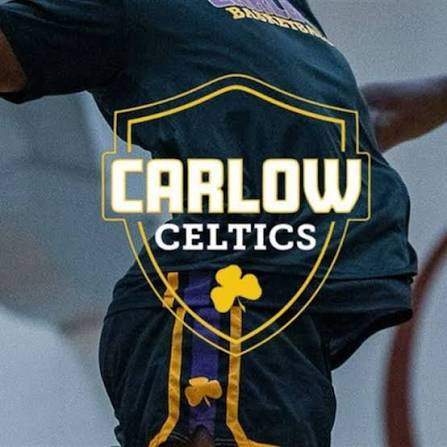

About Basketball

Basketball is one of my favorite sports. I have been playing basketball since I was very young. It is a fast-paced sport that requires teamwork, communication, and a lot of practice.
Basketball can be played with two teams trying to score points by putting the ball through the hoop. Players need to work together on offense and defense to be successful.
Important Skills
There are many different skills that basketball players need to develop. Shooting, dribbling, passing, and defense are some of the most important skills.
Players also need to have good conditioning because basketball involves running up and down the court. Practicing these skills regularly can help a player become better.

Why I Like Basketball
I like basketball because it is competitive and gives me a chance to work with teammates. Every game is different, and there is always something new to improve.
Basketball has also taught me the importance of teamwork, hard work, and staying disciplined. These are skills that can be useful both on and off the court.